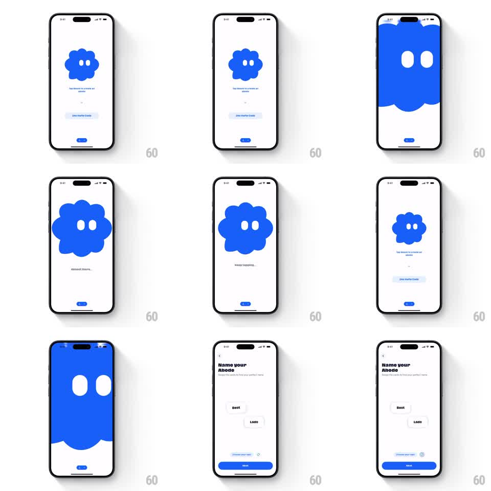

Media
Frame-by-frame

Rebuild this interaction 1:1: Abode's tap-to-create onboarding - a blue blob mascot sits center screen over "Tap Abode to create an abode", and each tap scales it up step by step with coaching captions ("Almost there...", "Keep tapping...") until it fills the whole screen with its blue body, then reveals the "Name your Abode" step with name chips and a Next button.

Rebuild this interaction 1:1: Abode's tap-to-create onboarding - a blue blob mascot sits center screen over "Tap Abode to create an abode", and each tap scales it up step by step with coaching captions ("Almost there...", "Keep tapping...") until it fills the whole screen with its blue body, then reveals the "Name your Abode" step with name chips and a Next button.
## Integration
Integration: stack-agnostic spec - springs given as stiffness/damping, timed motions as duration + curve; map every value to your framework and animation library of choice.
## Scene
White screen. Center: a rounded blue blob character with two white oval eyes. Below: the caption "Tap Abode to create an abode", a "Use Referral Code" link, and a small progress pill. Later captions: "Almost there...", "Keep tapping...". Final state: the blob's blue fills the screen (eyes huge at the top), then a white "Name your Abode" screen with name suggestion chips (Best, Lads) and a blue Next button.
## Motion spec
Pattern: tap-driven progressive scale-up to full-screen fill.
- Each tap: the blob scales up a step (1.0 -> 1.5 -> 2.2 -> 3.2, spring ~300/16 per tap, slight squash on tap-down scale 0.95).
- At step two the caption swaps to "Almost there..." (crossfade 150ms); at step three to "Keep tapping...".
- Final tap: the blob scales past the screen edges (scale -> 8, 400ms ease-in), its eyes staying visible until they pass the top edge, so the blue body becomes the background.
- The blue holds 300ms, then slides up like a curtain (400ms ease-in-out) revealing the "Name your Abode" screen.
- Name chips fade up staggered (200ms, 80ms apart); the Next button slides up last (250ms).
## Calibration
- Every tap gives immediate squash feedback even before the scale step.
- The full-screen blue moment must read as "you went inside the blob", not a color cut.
## Reduced motion
Taps still advance steps, but the blob crossfades between sizes; the reveal is a simple fade.
## Don't miss
- The eyes scale with the blob - they grow comically large before exiting the frame.
- The progress pill at the bottom fills with each tap.